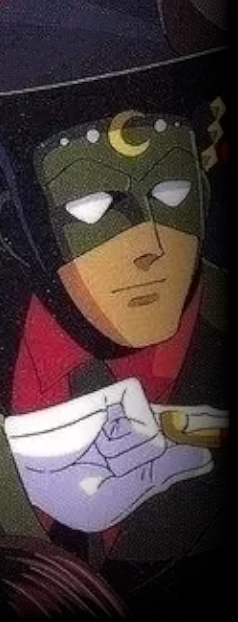

中層に存在するホテル。 内部には多数の施設が併設されており、評判は上々だがお値段はちょっと張る。

残月 男性 年齢不詳 能力タイプ トランサー 能力名 月夜見
ホテル【 白昼 】のオーナー。 角帽のような帽子と覆面、常に手にした煙管がトレードマーク。 人前に姿を現す時は常に【怒鬼】をはじめとしたボディーガードを連れている。
異能【月夜見】はあらゆるものを針状に変化させるトランス能力。 超人的な俊足も相まって戦闘力は相当のものと推察されるが、 荒事はボディーガードに任せて彼は戦わないため、その実力を目の当たりにした者は少ない。